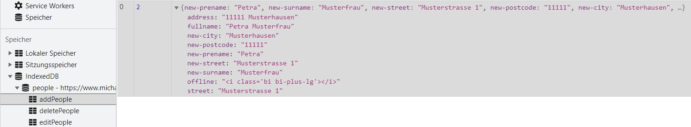
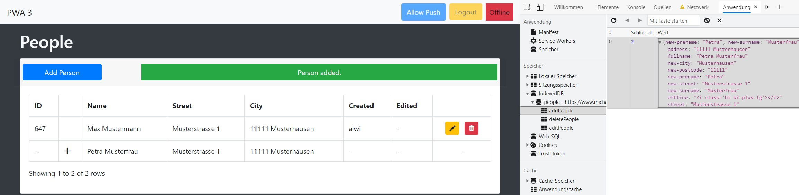

Daten, die vom Nutzer hinzugefügt werden, während keine Internetverbindung besteht, können nicht wie die anderen Assets
im Cache zwischengespeichert werden.
Die Lösung ist die Verwendung einer IndexedDB.
Diese speichert POST-Request so lange ab, bis wieder eine Internetverbindung besteht.
Für die Verwendung von IndexedDB muss die externe JavaScript-Datei (app.js) erweitert werden.
Eine IndexedDB besteht aus mehreren ObjectStores, die wiederum Tabellen beinhalten,
in denen dann die Daten gespeichert werden.
Also muss als erstes eine initIndexedDB-Methode erstellt werden, die die IndexedDB und die
dazugehörigen ObjectStores initialisiert.
onupgradeneeded wird nur dann aufgerufen, wenn die Datenbank noch nicht existiert
oder die Versionsnummer sich ändert.
function initIndexedDB() {
let idb = window.indexedDB.open("people", 1);
idb.onupgradeneeded = event => {
let db = event.target.result;
db.createObjectStore("addPeople", {autoIncrement: true});
db.createObjectStore("editPeople", {autoIncrement: true});
db.createObjectStore("deletePeople", {autoIncrement: true});
};
}
Für jede Funktion, die offline durchgeführt werden kann, muss ein eigener ObjectStore erstellt werden.
Die Funktionsweise der IndexedDB wird nun am Beispiel des Hinzufügens erklärt.
Der Ablauf beim Editieren und Löschen ist gleich, lediglich einige Abschnitte von Funktionen unterscheiden
sich teilweise voneinander.
Der EventListener("click") reagiert als aller erstes auf den Klick des "Save"-Buttons der View.
Wurden nun also Personendaten eingetragen, so werden diese als erstes mit Hilfe der checkAddInput-Methode validiert.
Das ist eine neu hinzugefügte Funktion, die die Validierung über JavaScript übernimmt, da diese offline nicht über PHP möglich ist.
Ist die Validierung erfolgreich, so werden die gesetzten Werte in die person-Variable geschrieben.
Ist der Nutzer beim Hinzufügen der Person(en) online, so greift die if-Abfrage.
Die dabei erhaltenen Informationen werden dann in ein Array geschrieben und mit dem Aufruf der addPeopleToSQL-Funktion
an diese übergeben.
if (document.getElementById("add-button") !== null) {
document.getElementById("add-button").addEventListener("click", async (event) => {
event.preventDefault();
if (checkAddInput()) {
let person = {
"new-prename": document.getElementById("new-prename").value,
"new-surname": document.getElementById("new-surname").value,
...
};
document.cookie = "success=Person added.; path=/"
if (navigator.onLine) {
let peopleArray = new Array(person);
addPeopleToSQL(peopleArray);
window.location.href = "http://localhost/people";
} else {
Object.assign(person,
{
"offline": "<i class='bi bi-plus-lg'></i>",
"fullname": person["new-prename"] + " " + person["new-surname"],
"street": person["new-street"],
"address": person["new-postcode"] + " " + person["new-city"],
});
addToAddPeopleIDB(person)
.then(() => {
window.location.href = "http://localhost/people";
})
.catch(error => {
console.log("Error adding person to addPeopleIDB", error);
})
}
}
})
}
Ist der Nutzer offline, so wird der else-Abschnitt ausgeführt.
In diesem Abschnitt wird als erstes das Object um die eingegebenen Informationen erweitert.
Neben den eingegebenen Informationen wird ebenfalls ein "plus"-Symbol hinzugefügt, welches dem Benutzer offline
die ausgeführte Operation in der Tabelle anzeigt.
Als letztes wird die addToAddPeopleIDB-Methode aufgerufen und die person-Variable mit übergeben.
Ist das erfolgreich, so wird der Nutzer auf die Tabelle navigiert, wenn nicht, wird eine Fehlermeldung in der Konsole erzeugt.
Die checkAddInput-Funktion überprüft die Nutzereingaben und validiert diese.
Erfüllen alle Angaben zur Person die Anforderungen, so wird true zurückgegeben, tun diese es nicht,
dann wird false zurückgegeben und die Fehlermeldung angezeigt.
function checkAddInput() {
let numbers = /^[0-9]+$/;
if (document.getElementById("new-prename").value === "" ||
document.getElementById("new-surname").value === "") {
document.getElementById("error-new-prename").innerHTML = null;
document.getElementById("error-new-surname").innerHTML = null;
...
if (document.getElementById("new-prename").value === "") {
document.getElementById("error-new-prename").innerHTML = "<div class='alert alert-danger' role='alert'>A prename is required.</div>";
}
if (document.getElementById("new-surname").value === "") {
document.getElementById("error-new-surname").innerHTML = "<div class='alert alert-danger' role='alert'>A surname is required.</div>";
}
...
return false;
} else {
return true;
}
}
Die addPeopleToSQL-Funktion wird aufgerufen, wenn der Nutzer eine Person online hinzufügt.
Des Weiteren wird sie in der if(navigator.onLine)-Abfrage aufgerufen, um Personen,
die offline hinzugefügt wurden, aus der indexedDB in die SQL-Datenbank zu schreiben.
Die addPeopleToSQL-Funktion erhält den people-Parameter, verarbeitet die erhaltenen Daten und übergibt
diese via POST an die angegebene URL.
Ist dies erfolgreich, so wird die Funktion clearAddPeopleIDB aufgerufen, um die Personendaten zum Hinzufügen
einer Person aus der IndexedDB zu entfernen.
function addPeopleToSQL(people) {
$.ajax({
url: "http://localhost/people/addPerson_Validation",
type: "POST",
data: {people: people},
success: () => {
clearAddPeopleIDB()
.catch(err => {
console.log("Error in sendPeopleToSQL: ", err);
});
},
error: err => {
console.log("Error sending data to server", err);
}
})
}
Ist dies erfolgreich, so wird die Seite neu geladen.
Anderenfalls wird in der Konsole eine Fehlermeldung ausgegeben.
Die clearAddPeopleIDB-Funktion entfernt, wie bereits erwähnt,
die Datensätze aus der IndexedDB und wird aufgerufen, nachdem diese in der SQL-Datenbank enthalten sind.
function clearAddPeopleIDB() {
return new Promise((resolve, reject) => {
let db = window.indexedDB.open("people", 1);
db.onsuccess = function () {
this.result.transaction("addPeople", "readwrite").objectStore("addPeople").clear();
resolve();
};
db.onerror = err => {
reject(err);
};
})
}
Die addToAddPeopleIDB-Funktion wird aufgerufen, wenn der Nutzer offline ist und Änderungen vornimmt.
Sie erhält den Parameter people, öffnet die IndexedDB und fügt die Daten mit Hilfe der add-Funktion
zum entsprechenden ObjectStore hinzu.
function addToAddPeopleIDB(people) {
return new Promise((resolve, reject) => {
let db = window.indexedDB.open("people");
db.onsuccess = function () {
let objStore = this.result.transaction("addPeople", "readwrite").objectStore("addPeople");
objStore.add(people);
resolve();
};
db.onerror = function (err) {
reject(err);
};
})
}
Da es hierbei um die offline-Funktionalitäten rund um das Hinzufügen einer Person geht, wird der ObjectStore("addPeople") verwendet.
Die offline hinzugefügten Daten können über Rechtsklick "Untersuchen" -> "Application" -> "IndexedDB" eingesehen werden.

Die if(navigator.onLine)-Abfrage muss erweitert werden.
Diese initialisiert als erstes den ServiceWorker und die IndexedDB, wenn der Nutzer online ist.
Daraufhin wird die Funktion getPeopleAddIDB aufgerufen.
Diese liefert alle zur IndexedDB hinzugefügten Personen zurück, die dann durch die bekannte Methode addPeopleToSQL
der SQL-Datenbank hinzugefügt werden.
function getPeopleAddIDB() {
return new Promise(function (resolve, reject) {
let db = window.indexedDB.open("people", 1);
db.onsuccess = function () {
this.result.transaction("addPeople")
.objectStore("addPeople").getAll().onsuccess = function (event) {
resolve(event.target.result);
};
};
db.onerror = err => {
reject("Error in getAddIDB: ", err);
};
})
}
Daten in der IndexedDB werden ebenso wie die Daten vom Server, die im Cache zwischengespeichert sind,
über HTML ausgegeben, um auch die offline hinzugefügten, bearbeiteten oder gelöschten Personen weiterhin offline einsehen zu können.
Dafür muss die externe JavaScript-Datei wie folgt erweitert werden.
Die caches.open-Funktion ruft die getPeopleAddIDB-Funktion auf, prüft sodann,
ob diese Assets enthält und schreibt diese in die View.
Somit werden offline hinzugefügte/bearbeitete/gelöschte Personen direkt clientseitig angezeigt.

Offline hinzugefügte Personen können nicht erneut bearbeitet werden.
Das liegt daran, dass die ID erst bei der nächsten Verbindung zum Internet durch das Datenbanksystem bereitgestellt wird.